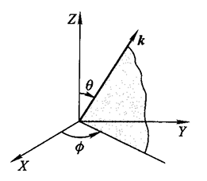
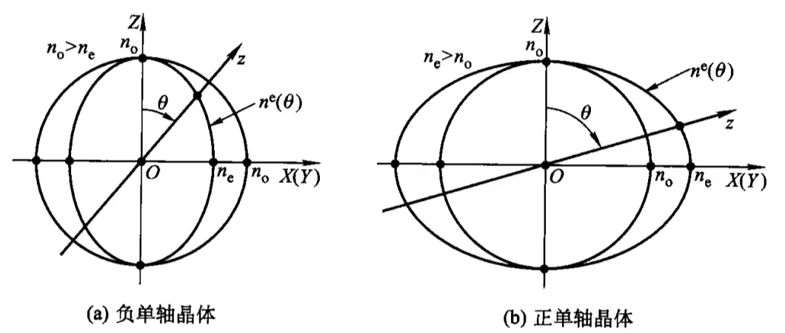
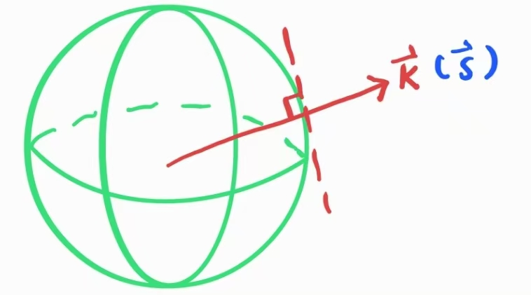
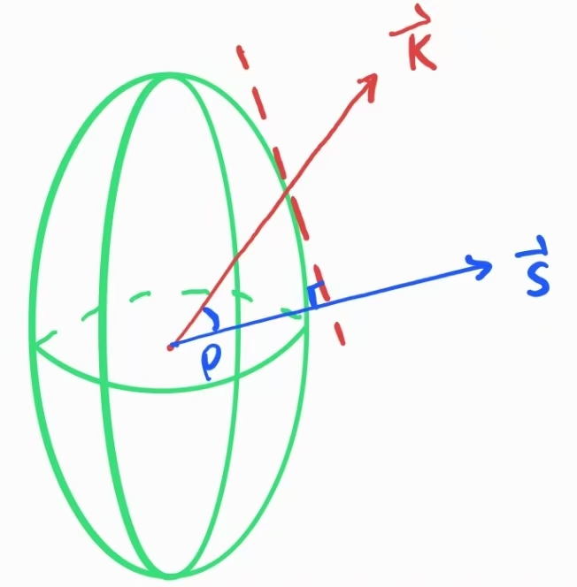
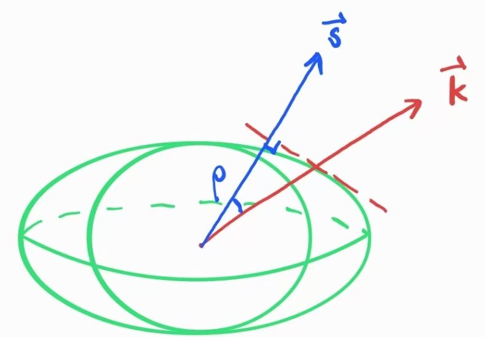

单轴晶体中的一个特别方向.
通常记为\(Z\)方向.
注意，光轴是一个特殊“方向”，而不是一个位置.
包含光轴和光波波矢量\(\mathbf{k}\)的平面.
偏振方向（即\(\mathbf{E}\)的振动方向）垂直于主平面的光束.
偏振方向平行于主平面的光束.
o光与e光的传播方向可以任意.
o光的折射率与其传播方向无关；
e光的折射率随传播方向而变化.
[注]各向异性晶体中，折射率通常与光的偏振及其传播方向有关.
不管沿哪个方向传播的o光折射率都是\(n_o\).
各向异性介质通常对不同传播方向、不同偏振方向的光，展现出不同的折射率.
o光与e光的折射率之差.
\(\Delta n\)的值沿光轴方向为\(0\)，而在垂直于光轴方向达到极大.
这里沿光轴方向指的是o光和e光的传播方向均平行于光轴方向的情况.
事实上，当光的传播方向与光轴方向一致时，将无法确定主平面，因此也就无法区别o光与e光了.
在垂直于光轴方向上，o光和e光的折射率，分别记为\(n_o\)与\(n_e\).
\(n_e\gt n_o\)的晶体，称为正单轴晶体.
\(n_e\lt n_o\)的晶体，称为负单轴晶体.
光传播方向与光轴方向的夹角.
\(\mathbf{k}\)在\(XY\)面的投影与\(X\)轴的夹角.

单轴晶体内，折射率与传播方向的关系既取决于半径为\(n_o\)的球（对o光），也取决于\(n_o\)与\(n_e\)为半轴旋转形成的椭球（对e光，椭球的旋转轴为光轴）.
在光轴方向上，圆球与椭球相交.
负晶体中，椭球体内切于球体；
正晶体中，椭球体外接于球体.

当一束平面光波在单轴晶体中传播时，波矢量\(\mathbf{k}\)的方向通常与能流密度\(\mathbf{S}\)的方向不一致.
\(\mathbf{S}\)的方向可以定义为垂直于矢量\(\mathbf{k}\)和\(n(\theta)\)曲线交点处所作的正切线方向.
对于o光，\(n(\theta)\)函数是半径为\(n_o\)的球体，因此，垂直于其正切线则与波矢量\(\mathbf{k}\)重合.

对于e光垂直于正切线方向（除了\(0°\)和\(90°\)）并不与波矢量\(\mathbf{k}\)重合，而是转开一个双折射或走离角.


走离角其实就是各向异性介质中\(\mathbf{S}\)与\(\mathbf{k}\)之间的夹角.
\(\rho\)与\(\theta\)的相互关系可以作为单轴晶体定向简单方法的基础.
| 正单轴晶体 | 负单轴晶体 | |
| 快轴 | o光方向 | e光方向 |
| 慢轴 | e光方向 | o光方向 |